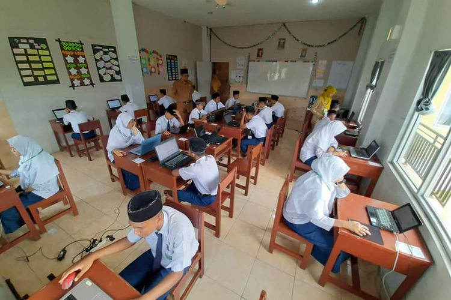

Sekolah di Zona Hijau Boleh Dibuka, Simak Panduan Keselamatan dari Kemendikbud
KOMPAS.com - Pemerintah melalui Kementerian Pendidikan dan Kebudayaan (Kemendikbud) mulai memberikan kelonggaran terkait kegiatan belajar mengajar (KBM) meski berada di tengah pandemi corona. Setelah menutup seluruh kegiatan sekolah lantaran Covid-19, pemerintah mulai memberikan izin bagi sekolah-sekolah di wilayah yang berstatus zona hijau Covid-19 untuk kembali membuka sekolah dan melanjutkan aktivitas belajar mengajarnya. Menteri Pendidikan dan Kebudayaan (Mendikbud) Nadiem Makarim menyatakan, meski sekolah di zona hijau memenuhi syarat untuk menyelenggarakan kegiatan belajar mengajar (KBM) tatap muka, orangtua memiliki andil dalam pengambilan keputusan.
Nadiem mengatakan, pembukaan sekolah di zona hijau harus memenuhi banyak persyaratan, salah satunya izin orangtua. Berdasarkan informasi yang disampaikan Kemdikbud melalui Twitter-nya, saat ini terdapat kurang lebih 10 persen sekolah di Indonesia yang sudah memulai pembelajaran tatap muka. Jumlah ini sangat sedikit, karena mengikuti zonasi pandemi yang direkomendasikan Gugus Tugas Percepatan Penanganan Covid-19.
Meskipun berjumlah sedikit, mereka yang terlibat dalam kegiatan belajar mengajar tersebut haruslah mengikuti panduan yang dibuat oleh Kemdikbud, agar tetap selamat dan tidak terjadi penularan virus. Dalam Panduan Penyelenggaraan Pembelajaran tersebut, ada beberapa hal yang dibahas mulai dari tugas dan tanggung jawab, protokol kesehatan di lingkungan pendidikan mulai dari pendidikan dasar, pendidikan tinggi, hingga pesantren atau pendidikan keagamaan.
Hanya sekolah di zona hijau Covid-19 yang boleh membuka kembali sekolah dengan memperhatikan protokol kesehatan dan dibuka secara bertahap antar jenjang pendidikan.
Jenjang mana yang diprioritaskan untuk terlebih dulu dibuka adalah jenjang pendidikan yang lebih tinggi (SMA dan SMP sederajat, lalu SD, dan terakkhir PAUD). Masing-masing tingkat pendidikan harus mengambil jarak pembukaan sekolah minimal 2 bulan sejak hari pertama pemberlakuan pendidikan tatap muka di sekolah tingkat atasnya.
Masa Transisi Sekolah-sekolah di zona hijau yang kembali membuka gerbangnya kepada siswa harus melewati masa transisi selama 2 bulan. Pelaksanaannya, sekolah harus membagi para peserta didik menjadi beberapa kelompok atau shift supaya tidak terjadi kerumunan atau terlalu banyak orang dalam satu ruangan kelas. Namun tidak dengan sekolah atau madrasah yang mempergunakan asrama, di masa ini mereka masih dilarang untuk membuka asrama dan melakukan pembelajaran tatap muka.
Seluruh siswa dan pihak yang ada di sekolah wajib menggunakan masker kain 3 lapis, mencuci tangan dengan sabun, jaga jarak minimak 1,5 meter dan tidak melakukan kontak fisik apa pun, terakhir adalah menjaga etika batuk atau bersin. Kantin dilarang beroperasi dan setiap siswa sangat disarankan membawa bekal pribadi dari rumah. Di masa ini tidak akan ada pertemuan wali murid, orangtua dilarang menunggu anaknya di sekolah, dan siswa dilarang istirahat di luar kelas.
Selanjutnya, jika dua bulan dilalui masa pembelajaran di sekolah sudah dilalui dan daerah tersebut masih tetap berstatus zona hijau, maka saatnya kegiatan pembelajaran masuk ke masa Kebiasaan Baru (new normal) Sementara bagi sekolah yang menerapkan asrama, di MKB ini mereka baru boleh memulai kegiatan tatap muka dan membuka asrama secara bertahap. Bertahap di sini maksudnya adalah pembatasan jumlah peserta didik yang boleh masuk dimulai dilihat dari jumlah pesertta didik yang ada
Jika jumlahnya di bawah 100 orang, maka di bulan I 50 persen diizinkan masuk, di bulan selanjutnya seluruh peserta didik boleh masuk. Namun jika peserta didiknya berjumlah lebih dari 100 orang, maka tahapan kuota per bulan adalah 25 persen, 50 persen, 75 persen, hingga di bulan keempat baru boleh 100 persen. Aturan di masa kebiasaan baru kurang lebih sama, hanya saja di masa ini kantin sudah diperbolehkan beroperasi kembali, kegiatan di luar kegiatan pembelajaran pun diperbolehkan dengan tetap menjaga protokol kesehatan. Satu hal yang juga dijelaskan, dalam pembukaan kembali sekolah di zona hijau, orangtua atau wali siswa masih boleh memilih sang anak untuk melanjutkan proses belajar dari rumah.
Waktu pembukaan sekolah Untuk tingkat SMA dan SMP, pembukaan sekolah di masa transisi paling cepat dilakukan pada Juli ini dan pada masa kebiasaan baru paling cepat September 2020. Seterusnya, tingkat SD paling cepat dimulai September di masa transisi dan November untuk masa kebiasaan baru. Terakhir untuk PAUD, paling cepat dimulai pada November 2020 (masa transisi) dan Januari 2021 (masa kebiasaan baru).